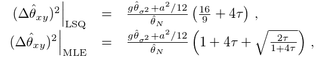
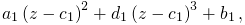
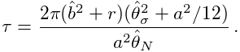
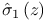
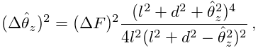
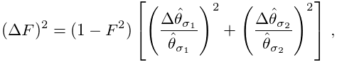
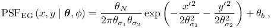
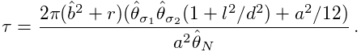
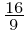
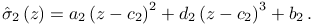

Calibration of the imaging system (astigmatism method)
3D SMLM imaging can be performed by introducing a weak cylindrical lens into the imaging path to create slight astigmatism in the image [1]. This results in images of molecules with different ellipticity depending on their axial position. When a molecule is in focus, its image appears round. If the molecule is slightly above or below the focal plane, its image appears ellipsoidal.
Calibration of the imaging system is a procedure which determines the orientation angle  of the imaged ellipsoids (the camera chip might not be aligned with cylindrical lens), and the relationship between the axial position  of the molecules and their imaged widths . The calibration is typically performed using a Z-stack of images of sub-diffraction fluorescent beads. We use a sparse sample with about 10 to 50 beads in the image and a Z-stack image sequence with an axial range of about  and a step size of .
Determining the orientation angle
-
1.
A sequence of images from a Z-stack is processed slice-by-slice using the methods for raw data analysis (image filtering, approximate localization, PSF fitting). Images of the beads are fit independently using the elliptical Gaussian PSF with as a free parameter.
-
2.
Results close to circular are discarded as the angle cannot be determined.
-
3.
The final orientation angle is calculated as the circular mean of all remaining measurements
 where  adjusts the fitted angles , and  is the number of measured beads.
Ellipticity as a function of an axial position
-
1.
Using the approximate positions of the beads in multiple Z-planes and the orientation angle , both determined in the previous step, the images of the beads are fit again using the elliptical Gaussian PSF, but with a fixed angle .
-
2.
To estimate the coefficients for the defocusing model, we first fit the pair of defocusing curves for each bead separately using an iterative least-squares algorithm which automatically discards outliers.
-
3.
From the fitted models, we determine a common focal plane of the beads as  and shift the data along the -axis such that all beads are positioned at the same focal plane.
-
4.
The final coefficients are obtained by fitting the pair of defocusing curves to all shifted data points. The ‘‘zero’’ axial position is given by the intersection of the two polynomials.
Guidelines for the choice of parameters
As the signal to noise ratio is usually higher in the 3D calibration data with fluorescent beads, users should set the threshold, in the case of the wavelet filter, to 5 to 8 times the standard deviation of the 1st wavelet level, e.g., 6*std(Wave.F1). The rest of the settings are the same as in 2D data analysis. Use the Preview button to see detections of the calibration beads with the current settings.
References
- [1] (2008) Three-dimensional super-resolution imaging by stochastic optical reconstruction microscopy. Science 319 (5864), pp. 810–3. External Links: Document Cited by: Calibration of the imaging system (astigmatism method).
![[LOGO]]()